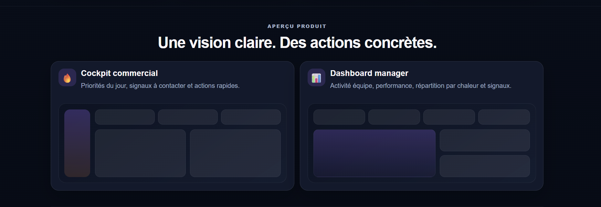
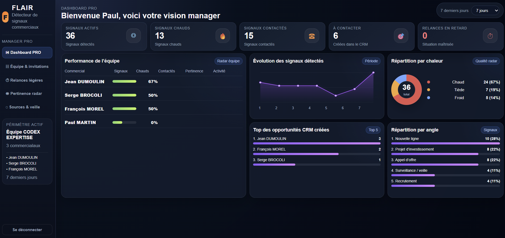

Radar commercial industriel
FLAIR repère les signaux qui méritent ton attention commerciale.
Une application simple pour détecter, analyser et prioriser les opportunités utiles avant d’ouvrir le CRM.
Top 3 du jour
Signaux chauds
À contacter
Signaux détectables
Des informations dispersées deviennent des priorités claires.
Méthode FLAIR
Un flux simple : détecter, analyser, prioriser, agir.
Ajoute un signal
Entreprise, titre, source et contexte terrain.
FLAIR analyse
Score, chaleur, raison et angle commercial.
Le Top 3 guide
Le commercial garde la main sur ses priorités.
Le CRM prend le relais
Le pipeline reste dans l’outil CRM existant.
Aperçu produit
Une vision claire. Des actions concrètes.
🔥
Cockpit commercial
Priorités du jour, signaux à contacter et actions rapides.

📊
Dashboard manager
Activité équipe, performance, répartition par chaleur et signaux.

Positionnement
FLAIR n’est pas un CRM.
FLAIR est un radar commercial. Il aide à savoir quoi regarder, quoi prioriser et quand agir.
FLAIR détecte et qualifie les signaux.
FLAIR aide à prioriser les actions terrain.
Le CRM centralise et suit les opportunités.
FLAIR ne remplace pas ton CRM. Il t’aide à savoir quoi regarder avant de l’ouvrir.Repérez. Priorisez. Agissez.
Un radar simple pour les commerciaux industriels.